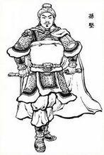

昔吴之武烈，称美一代，虽奋奇宛叶，亦受折襄阳。讨逆雄气，志存中夏，临江发怒，命讫丹徒。——孙坚
孙坚
孙坚（155年－192年），字文台，汉族，吴郡富春（今浙江富阳区）人。东汉末年将领、军阀， 孙吴政权的奠基人之一。据传为春秋时期军事家孙武的后裔。
书说他“容貌不凡，性阔达，好奇节”。曾参与讨伐黄巾军的战役以及讨伐董卓的战役。后与刘表作战时阵亡。 因官至破虏将军，又称“孙破虏”。其子孙权即为孙吴的开国皇帝。孙权称帝后，追谥孙坚为武烈皇帝，庙号始祖。
少年英雄
孙坚年少时为县吏，性阔达，好奇节。他十七岁那年，随其父一起乘船去钱塘（今浙江杭州），途中，正碰上海盗胡玉等人抢掠商人财物， 在岸上分赃。商旅行人，一见此情此景，都吓得止步不前， 过往船只，也不敢向前行驶。孙坚见状，对父亲说：“这些强盗可以捉拿住，请让我去干。”他的父亲说：“这种事不是你能干得了的。”
孙坚提刀，大步奔向岸边，一面走，一面用手向东向西指挥着，好像正分派部署人众对海盗进行包抄围捕似的。海盗们远远望见这情形， 错认为官兵来缉捕他们，惊慌失措，扔掉财货，四散奔逃。孙坚不肯罢休，追杀一海盗而回，其父亲大惊。孙坚却因此声名大振， 郡府里召他代理校尉之职。 [5] 时会稽郡人许昌在句章兴兵作乱，自称阳明皇帝，与其子许韶一起四处煽动诸县，聚集起同伙数以万计。 孙坚以郡司马的身份召募精良勇敢的壮士千余人。会同州郡官兵，协力讨伐，击溃了这股势力。这一年，正是熹平元年（172年）。 刺史臧旻向朝廷呈报了孙坚的功劳，于是， 孙坚被任命为盐渎县丞，数年后，又相继改任盱眙县丞和下邳县丞
孙坚当任三县县丞，所到之处，甚有声望，官吏百姓也亲近顺服。同他往来的人，常常达到数目。 这里有乡里耆旧名人，也有任侠好事的少年。孙坚对他们，像对待子弟亲友一样。接待抚养，尽心尽力。
征伐建功
中平元年（184年），黄巾首领张角在魏郡起事（参见：黄巾起义）。由于这次起义八州并发，所以来势迅猛， 起义火焰很快燃遍了整个中原地区。百姓风起响应。起义军所到之处，焚烧郡县官府，处死地方官员。官吏豪强抱头鼠窜， 刘氏江山摇摇欲坠。在三十六方一旦俱发的起义声威面前，东汉统治者惶恐不安。他们调动一切力量，对起义军进行镇压。 车骑将军皇甫嵩、中郎将朱儁奉调围剿威胁洛阳的黄巾军波才部。朱儁奏请孙坚担任佐军司马。孙坚把他的家眷都留在九江郡寿春县 ， 在淮、泗一带招募了一些士兵，加上跟随他在下邳县当差的同乡少年，共得精兵一千人。此后，孙坚便率领这一千多士兵，随朱儁南征北战。
中平四年（187年），长沙人区星反叛，自称将军，聚众一万多人，攻围城邑。朝廷任命孙坚为长沙太守， 前往剿灭。孙坚到郡，检选循吏，使之治民，并且明白交代：“你们只管好好对待善良百姓，好好处理官曹文书，按规矩办事。至于郡中盗贼， 交我负责好了！”他说到做到，立即率领将士，谋划方略，仅一个月的工夫，就打败了区星，郡中震服。
据《吴录》记载，庐江太守陆康的侄儿当时任宜春县令，被敌兵所攻，派人向孙坚求救。主簿劝孙坚不要越界征讨。孙坚回答：“太守我没有什么文德， 只以征伐为功。越界征讨，是为保全郡国。倘若以此获罪，我无愧于天下！”于是，整顿部伍，起兵驰援，敌人听说孙坚要来，闻风逃遁。 [14] 汉卫朝检录孙坚前后战功，封他为乌程侯。
挥师讨董
中平六年（189年），汉灵帝驾崩，大将军何进与十常侍争权同归于尽，董卓废少帝刘辩，改立陈留王刘协为帝，掌握朝中大权， 在京城横行跋扈，恣意妄为。孙坚闻知，拊膺长叹：“如果当年张温听了我的话，朝廷哪会有这场浩劫！” 天下诸多郡，纷纷兴兵付伐董卓。孙坚也参与其事。孙坚起兵不久，便做了两件大事。兵到荆，逼死了荆刺王睿；兵到南阳，杀掉了南阳太守张咨。
初平元年（190年）冬天，在鲁阳稍事休整，孙坚便想进军讨伐董卓。出发前，他派长史公仇称带兵去催促军粮， 为此，他在鲁阳城东门外集合官属， 设帐饮酒，给公仇称送行。董卓听说孙坚要起兵，派东郡太守胡轸引兵赴鲁阳迎战。 孙坚正和部属饮酒谈笑，胡轸的先遣骑兵突然袭来。
令部队整顿阵容，不得妄动，自己则饮酒谈笑自若。敌人的骑兵越来越多，孙坚这才慢提起身离开席位， 引导将士们有条不紊地进入城内。 孙坚对部将们说：“向坚所以不即起者，恐兵相蹈藉，诸君不得入耳。”胡轸见孙坚兵马整齐、纪律严明，斗志旺盛， 不敢攻城，撤兵离去（参见鲁阳之战）。 孙坚遂不战而屈人之兵，显示了其善于用兵的胆略和才能。
兵进洛阳
董卓曾对长史刘艾说：“关东的部队屡遭失败，都怕了我，只有孙坚，颇能用人，应该告诉将领们，让他们有所防范。当年我和周慎到金城去征讨边章、 韩遂，我曾请示张温，希望率部驻扎在后，为周慎作后续部队，以备万一，张温不听。我当时便上书，说明形势利弊， 并预料周慎一定不会成功。这些，台阁中均有记载。事情还没有结果，张温又派我讨伐先零叛羌。以为这样一来，西土就可一举扫平了。 我明知此事不会成功，但又无法阻止。只好领兵出发，不过，我留了一手，让别部司马刘靖率领四千军队驻扎在安定，营造声势，以为呼应。 所以，当叛羌要截断我的归路时，我率军轻轻一击，他们便让开了道路，因为他们害怕，因为我在安定地方有军队策应。叛羌以为我们在安定有几万人马， 其实不过是刘靖那四千人罢了！孙坚当时跟着周慎，也曾向周慎献计，愿意自己率兵一万，先到金城，而让周慎引兵二万驻扎在后，以为接应。 边章城中粮食不多，要到外面运粮，他们害怕周慎后续大军，一定不敢轻易与孙坚交战，而孙坚的兵又足以断绝他们运粮的道路。 当时，如果采用孙坚之计，或许能够平定凉州，可惜周慎小儿，未用其计。张温不用我的计谋，周慎又不听孙坚的建议，结果终于失败。当时， 孙坚小小一个佐军司马，见解与我大致相同，确有过人之处，其才可用！”
将星陨落
公元192年（初平三年）四月，袁术派孙坚征讨荆州，攻打刘表。刘表派黄祖在樊城、邓县之间迎战。 孙坚击败黄祖，乘胜追击，渡过汉水，包围襄阳。刘表闭门不战，派黄祖乘夜出城调集兵士。黄祖带兵归来，孙坚复与大战。 黄祖败走，逃到岘山之中，孙坚追击。黄祖部将从竹林间发射暗箭，孙坚中箭身亡，将星就此陨落。
后世评价
罗贯中：谁道江南少将才？明星夜夜照文台。欲诛董卓安天下，为首长沙太守来。
陈寿：勇挚刚毅，孤微发迹，导温戮卓，山陵杜塞，有忠壮之烈。
华谭：昔吴之武烈，称美一代，虽奋奇宛叶，亦受折襄阳。讨逆雄气，志存中夏，临江发怒，命讫丹徒。